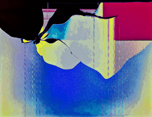

Hello, and welcome to Monitors of Modern Art!
You can learn more about MOMA here, or browse our various collections, or look below for some highlights of the gallery's best works.
(Warning: This site is not for mobile users browsing on data. Our images are large, mostly uncompressed, and very data-intensive, so it is advised to view this website on a fast wi-fi connection.)
|  |
5 September 2016
This week's new collection is CPMA (guess what that acronym stands for and you can name an upcoming work!). CPMA is a very different presentation from the past couple of collections. These works are vibrant, colorful, active, and filled with pastel gradient. Sun-Warmed Sand is a good example, being an intensely warm work focused on yellow, with a geometric blue highlight towards the edge. The First Life is another example, being more blue/green in general nature and having better shading and transitions between colors. However, bright pastel gradient isn't all this collection has to offer. Rushing Blood presents a perfect color contrast between light blue and deep red, with less pastel in its shading and a very different feel. Really Deep Down is perhaps the most unique work in this collection, mostly due to its color composition. A deep, slightly unsaturated purple stands out among the rest of MOMA's primary- and secondary-color-focused works. A teal color acts in the work as a bridge between the purple and a slightly dim orange, to provoke a fascinating and truly unique atmosphere. And finally, my personal favorite work in CPMA is Sun in the Lagoon, which provides the clearest design in this gallery, all while being one of the most colorful and one of the most well-balanced works. The rest of this gallery, especially, is also very much worth checking out, so please enjoy!
|
22 October 2015

The name of this work is inspired by its intense warmth. Comprable, perhaps, to the surface of the planet Venus, only with less noxious gas. Like the planet venus, as Venerean Landscape ascends from the bottom, rises in altitude, it becomes less intense and more calming, to match Venus's upper atmosphere and general exterior appearance. Perhaps it is an utterly hellish place, but at least from our point of view, Venus is indeed a truly beautiful planet.
19 November 2015

Some sort of wave travels along, and as it reaches the center of this work it expands and reaches a sort of explosion, from which it departs in a marvelous array of colors. It is abstraction incarnate - what this picture really displays is impossible to understand, but it begs to be examined and reexamined, and admired for its beauty, its incomprehensibility.
23 September 2015

Like the universe, the chalice is only transient. In fact, it doesn't even look like a chalice - perhaps this picture is misnamed. It invites interpretation. The pastel fade from soft yellow to baby blue may represent harmony, and the rough moire in the center of the work is somehow lyrical. Chalice is not a literal title, for it is just an abstraction. The essence of modern art.
22 May 2015

Why are ponds green? I dunno. But then, sometimes you just have to jump in, and maybe it'll make sense. This was the first work in the Monitors of Modern Art library, and is a very strong start. It is a beautiful, yet simple, metaphor.